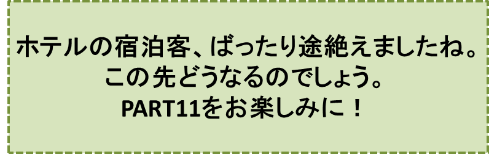

三郎と幸福のホテル-PART10-
『マトョリーナ』の巻
笠原正雄
三郎は考えこみます。
“私がこうして受付にいる間は、草花に水をやる暇がない。誰か、代わりにやってもらわねばなるまい……。それには、ぜひ信頼できる妻をもらって、水撒（ま）きの仕事をしてもらうのが一番だ”
彼がこう考えて沢山の人達の中から妻に選んだ女性は、ハノーザの国でも一番の美人、マトョリーナでした。マンシャーニよりも美しく、しかも気品に満ち溢れています。
彼女はつつましやかでマンシャーニのように三郎の持っている財産を派手に使い果たすというような心配は全くありませんでした。
彼女は、来た日から水やり、水撒きなどの仕事を始めました。
ホテルに泊まる人々は、彼女が湧き出る泉の水を汲んで草花達に水をかけながら優しく話しかけている姿に、うっとりと見惚れます。三郎自身、仕事の合間に我を忘れて眺めることも度々でした。
“こんな幸福な暮らしをすることが出来ることを、どこの誰が想像出来ただろう。それでいて私は、あの老人の言葉をことごとく破ったというのに”
三郎はこんな風に思い毎日を楽しく過ごします。
ホテルはその後益々客が増えて、収入は有り余る程になりました。マトョリーナは、天使のような姿でいつもホテルの中庭の草花に水を与えています。
彼女は、水やり水撒きに疲れると噴水の側に身を屈(かが)めます。
すると、その周りを小さな可愛い女の子、男の子が歌を歌いながら跳ね回ります。
三郎は楽しくて仕方ありません。
……しかし、あぁしかし、こんな日々も長くは続きませんでした。
彼女はある日、高い熱を出しそれっきり寝付いてしまったのです。
三郎は慌てます。町の中で最高の名医とされるゴルーティ博士を呼んで、診てもらいました。
ゴルーティ博士は彼女を見ると、すぐ入院させるよう勧めました。
「一刻も早く彼女をこのホテルから出して、病院へ入院させましょう。この病気を治すためには立派な設備の整った病院で、万全の治療をすることが必要です。多少お金は必要となるでしょうが……。マトョリーナのためには、貴方はそんなことは言っておれないはずです。一刻も早くマトョリーナをこのホテルから、病院に搬送することにしましょう」
「いいえ、ゴルーティ博士」
と三郎は強く首を横に振ります。
「ゴルーティ博士、私は、妻の病気を治す為に必要なお金をいつでもそして幾らでも用意します。しかし、彼女を病院へ送ることは出来ません。博士！ 私は、ありったけのお金を出して、このホテルの一室を世界のどの病院にも負けないほどの設備を整えましょう。
ゴルーティ博士！ 貴方こそが主治医にふさわしい方です。先生！ どうか私の願いを受け入れて下さい」
三郎は、こう強く言って、ホテルの一室をどんな病院にも負けないほど立派に、改造しました。
彼は、お金に全く糸目をつけないで、最高の治療器具を買い揃え、国外を含めた有名病院、有名大学の名医を呼び、ゴルーティ博士を主治医として、彼女の治療に当たらせました。
しかし病気は少しも良くならないばかりか、日毎に重くなっていく一方でした。名医さん達だけでなく、マトョリーナを知る町の人達が口を揃えて三郎に言います。
「彼女を、このホテルから出しましょう。一刻も早く彼女をホテルの外に運び出しましょう」
しかし、この言葉にも三郎は聞く耳を持ちません。
「どうして彼女の病気が、このホテルで治せないのか！ どの病院にも負けない程の設備が整っているというのに」
こう主張しながらも、三郎はとても心細くなりました。貯えていたお金が高額の治療代によって、間もなく尽きてしまうことが分かったからです。
彼は、思いきってホテルの宿泊代を二倍に値上げします。しかしそれでも必要なお金には十分でないことが分かりました。彼は更にホテルの宿泊代を二倍に値上げしました。こうして彼はどんどん値上げしていき、そして何と、一日に二回も値上げすることすらあったのです。しかし、それとともに宿泊客が目に見えて急速に減っていきました。
一日にほんの数人ほどしか、泊まりに来なくなったのです。泊り客は資産家、豪商、大会社の社長、そういった人達ばかりになったのです。
そして、正にこんな時、三郎の最愛の妻マトョリーナはこの世を去っていきました。
三郎はひどく落胆しました。
“医者達が言ったように、彼女を病院へ入れたら、よかったのかもしれない……”
と深く反省する中で、自暴自棄となり、ホテルの宿泊代をどんどん値上げしました。とうとう、この大きなホテルに泊まりに来る人は一人もいなくなりました。
彼は、もはや誰も泊りに来なくなったホテルの受付で、青白い顔をして、塞ぎこんだままとなります。
“この町に来る人達は、もはや、このホテルには泊まらなくなってしまった。私の完全な失敗さ……”
彼はふらふらと立ち上がると、重い足を引きずってバルコニーに出て、長椅子に力なく座り込みます。
このバルコニーからは、町全体を見渡すことが出来ます。
ホテルの前の広場から大通りが力強く、この町を貫いており、並木の樹々の緑が、目に染みて見えます。広場にある大きな泉には小さい鳥、大きな鳥、白い鳥、茶色の鳥、黒い鳥、色とりどりの鳥達が元気いっぱいに飛び回り遊んでいます。翼が強い日の光を受けて、キラ、キラッ、キラ、キラッと輝きます。
三郎は、一日中このバルコニーで過ごし、夜もこのバルコニーの長椅子に横になって寝ました。
翌日もやはり同じことでした。こんな日がしばらく続きましたけれど、ようやく目覚めたのでしょう。三郎は、
“宿泊代を値下げしなければならない”
と思い始めます。しかし彼にとって、このホテルの宿泊代を値下げすることは、値上げするのに要したのと同じだけの月日が必要でした。
♪♪♪♪コーヒーブレイク♪♪♪♪
